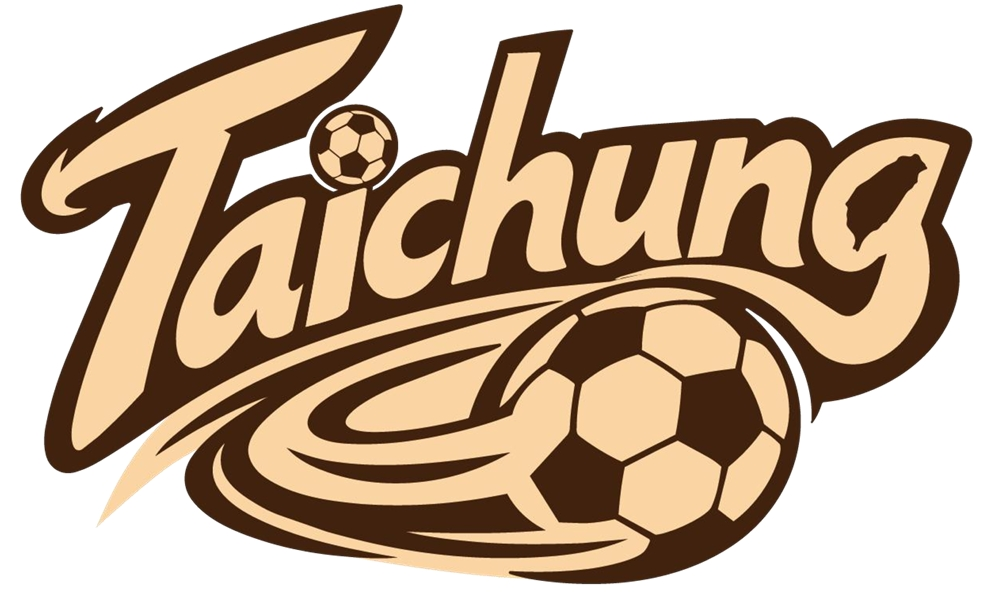

跳至主要內容

臺中分齡足球友誼賽
2026 INTERNATIONAL INVITATIONAL
12.05 — 12.13
首頁
大會公告
參賽球隊介紹
賽事資訊
賽程查詢
U6
U8
U10
U12
U15
成人組
競賽章程
活動會場
相關單位
海線足球協會
參賽球隊介紹
參賽球隊介紹與相簿
請開啟瀏覽器的 JavaScript 以查看球隊介紹與照片相簿。
球隊介紹
×
‹
›
查看原尺寸照片 ↗
TEAM PROFILE
閱讀 Facebook 原文 ↗
回到首頁
·
大會公告
·
活動會場